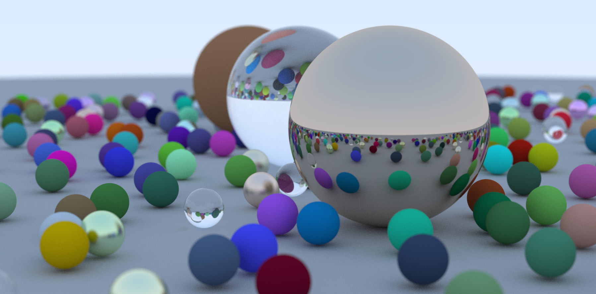

Self-Introduction
I am a student in the software college of NEU in China
And my Chinese name is Jiazheng Lin, I'm not sure which should put first
in English format, and for my English name. Well, I don't have English name.
However, Lin has a corresponding form in English as Lam.
Amateur interest
Well, for my daily life, I have some interest in philosophy, especially the German classical philosophy from Kant til Heidegger.
Though I can't understand what they are saying, even via the Chinese version.
And for the novel, those written by Dostoevsky and Xiaobo Wang are my favorite.
For sure, every boy has some addiction on the video game, but I can't play them in the university.
I prefer the game with open world that allows you to explore them freely, though not totally free.
interest
I mentioned that I love video game, so in the campus, I want to learn something related to the game-development.
So I followed some graphical and rendering tutorials. However the schedule of the lectures in university is unreasonable, my progress is always
Intermittent. But I do have some progress, but they are just something easy. I'm just a ordinary sophomore. I believe in the grade of junior, after the
finish of basic CS class like Computer Networking, Operating System and etc, there will be more spare time in the next two semesters.
And here are some snapshot of my progress on CG.
This one is the final presentation following the guide book "ray tracing in one weekend". Yeah, just one weekend...
If you want to see the code of it, here is the link
the link of the project on github

But I have to emphasize that this is just following the guide step by step, after this one, there is still "ray tracing in one week" and
"ray tracing in the rest of life", and after those, there come another book "physically based rendering", so it is a long way to go, I'm just at the
very beginning.
This one is the attempt try to solve the soft shadow using PCSS, though the effect is not good. There is lot of noise.
And the code is not updated, because it is exactly the homework of an online lecture, and it is hard to follow...
goal
So it's easy to see that, my goal is the Computer Graphic. And I know CS has reach a bottleneck in recent years, and lots of people turned to the Computer Version.But I think CS is awesome, and recently the Unreal Engine released the 5th edition. I know that there should be plenty of hidden opportunity in this area, and even I can't get any progress in the future, I'm working with the thing I love, and that's enough.